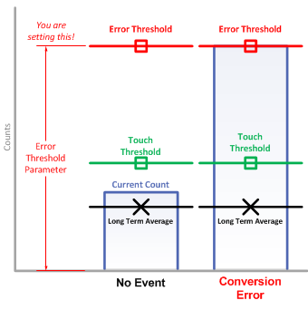

The Max Count Error flag is set when conversion count cross the error threshold. Error threshold specifies the maximum conversion result allowed for any element within a sensor. If during the conversion process one or more elements does not complete their conversion before the conversion result crosses the error threshold, the peripheral will terminate the conversion and the error condition will be flagged in software at a sensor level.This mechanism prevents a conversion from continuing forever in the event of an incorrect calibration or a hardware problem. To save conversion time by blocking the undesired conversion result range.
To modify the Max Count Fault Threshold:
1. Go to Options -> Features -> Advanced
2. Go to the sensor window -> Tuning tab -> Change Error Threshold*
*Click the Error Threshold parameter in sensor window for more information.
